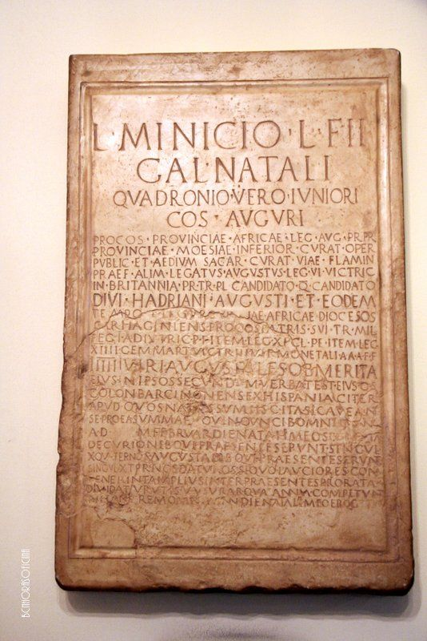

"Observa amb atenció, ciutadà. Aquest és el meu veritable llegat, el tresor que has rescatat de les mans negres d'aquells que volien esborrar-lo per sempre. Aquesta pedra no és ficció; és la meva història real, gravada en marbre fa gairebé dos mil anys."
Cuadronio Vero Junior
"Vaig recórrer el món des de Britànnia fins a l'Àfrica, però el meu major orgull va ser néixer i ser recordat a la meva estimada Barcino."
¡Missió complerta, ciutadà!
Has salvat el Tresor de Barcino. Si t'ha agradat l'aventura, ajuda'ns amb una ressenya a Google.
El teu pròxim desafiament t'espera al Barri Gòtic:
EL MANUSCRIT DE PEDRA
Fes servir aquest codi per obtenir un 10% de descompte:
BARCINO10